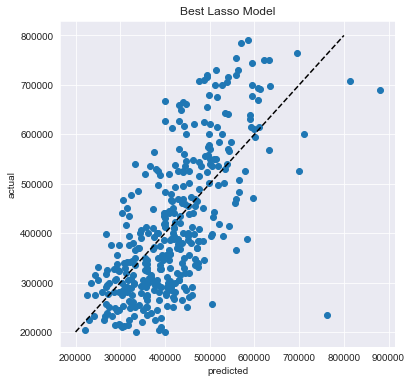
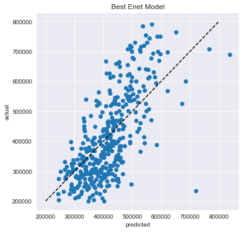
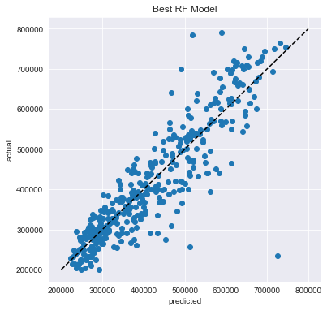

# Importing the libraries
import numpy as np
import pandas as pd
pd.set_option('display.max_columns', 50)
from matplotlib import pyplot as plt
%matplotlib inline
import seaborn as sns
sns.set_style('darkgrid')Model Training Workbook
Welcome to the Model Training Workbook. As usual, let’s start with importing the libraries we will need.
On Wednesday, we have worked with the house_df and learnt how to best clean a data set. We will continue with the cleaned data set from Monday. Let’s start by reading it into a dataframe.
house_df = pd.read_csv('cleaned_house_df.csv')Of course, how clean the data set is we still need to check it.
house_df.shape(1863, 30)house_df.describe()| tx_price | beds | baths | sqft | year_built | lot_size | basement | restaurants | groceries | nightlife | cafes | shopping | arts_entertainment | beauty_spas | active_life | median_age | married | college_grad | property_tax | insurance | median_school | num_schools | tx_year | two_and_one | newer_house | school_score | property_age | |
|---|---|---|---|---|---|---|---|---|---|---|---|---|---|---|---|---|---|---|---|---|---|---|---|---|---|---|---|
| count | 1863.000000 | 1863.000000 | 1863.000000 | 1863.000000 | 1863.00000 | 1863.000000 | 1863.000000 | 1863.000000 | 1863.000000 | 1863.000000 | 1863.000000 | 1863.000000 | 1863.000000 | 1863.000000 | 1863.000000 | 1863.000000 | 1863.000000 | 1863.000000 | 1863.000000 | 1863.000000 | 1863.000000 | 1863.000000 | 1863.000000 | 1863.000000 | 1863.000000 | 1863.000000 | 1863.000000 |
| mean | 423010.393451 | 3.409018 | 2.564144 | 2299.173913 | 1982.71927 | 12522.044552 | 0.879227 | 40.352657 | 4.515835 | 5.100913 | 5.348900 | 40.945786 | 3.406871 | 23.464305 | 15.896404 | 38.604402 | 69.070853 | 65.047236 | 461.369834 | 138.816425 | 6.495706 | 2.791734 | 2007.116479 | 0.039184 | 0.031133 | 17.982823 | 24.397209 |
| std | 151764.257544 | 1.065101 | 0.928741 | 1298.029915 | 20.21804 | 35040.992371 | 0.325951 | 47.038157 | 4.501180 | 8.500743 | 7.566931 | 53.717473 | 4.705711 | 25.837376 | 17.724606 | 6.643582 | 19.679230 | 16.904131 | 222.484352 | 70.250523 | 1.992058 | 0.507300 | 5.205638 | 0.194085 | 0.173723 | 6.465535 | 21.087996 |
| min | 200000.000000 | 1.000000 | 1.000000 | 500.000000 | 1880.00000 | 0.000000 | 0.000000 | 0.000000 | 0.000000 | 0.000000 | 0.000000 | 0.000000 | 0.000000 | 0.000000 | 0.000000 | 22.000000 | 11.000000 | 5.000000 | 88.000000 | 30.000000 | 1.000000 | 1.000000 | 1993.000000 | 0.000000 | 0.000000 | 3.000000 | 0.000000 |
| 25% | 300000.000000 | 3.000000 | 2.000000 | 1342.500000 | 1969.00000 | 1540.000000 | 1.000000 | 7.000000 | 1.000000 | 0.000000 | 0.000000 | 6.500000 | 0.000000 | 4.000000 | 4.500000 | 33.000000 | 58.000000 | 53.000000 | 319.000000 | 94.000000 | 5.000000 | 3.000000 | 2004.000000 | 0.000000 | 0.000000 | 12.000000 | 6.000000 |
| 50% | 392000.000000 | 3.000000 | 3.000000 | 1900.000000 | 1986.00000 | 5846.000000 | 1.000000 | 23.000000 | 3.000000 | 2.000000 | 3.000000 | 22.000000 | 2.000000 | 15.000000 | 10.000000 | 38.000000 | 73.000000 | 66.000000 | 423.000000 | 124.000000 | 7.000000 | 3.000000 | 2007.000000 | 0.000000 | 0.000000 | 18.000000 | 21.000000 |
| 75% | 525000.000000 | 4.000000 | 3.000000 | 2951.000000 | 2000.00000 | 11325.000000 | 1.000000 | 58.000000 | 7.000000 | 6.000000 | 6.500000 | 51.000000 | 5.000000 | 35.500000 | 21.000000 | 43.000000 | 84.000000 | 78.000000 | 564.000000 | 168.000000 | 8.000000 | 3.000000 | 2011.000000 | 0.000000 | 0.000000 | 24.000000 | 38.000000 |
| max | 800000.000000 | 5.000000 | 6.000000 | 7842.000000 | 2014.00000 | 436471.000000 | 1.000000 | 266.000000 | 24.000000 | 54.000000 | 47.000000 | 340.000000 | 35.000000 | 177.000000 | 94.000000 | 69.000000 | 100.000000 | 100.000000 | 4508.000000 | 1374.000000 | 10.000000 | 4.000000 | 2016.000000 | 1.000000 | 1.000000 | 30.000000 | 114.000000 |
house_df.describe(include=['object'])| property_type | exterior_walls | roof | |
|---|---|---|---|
| count | 1863 | 1863 | 1863 |
| unique | 2 | 8 | 5 |
| top | Single-Family | Brick | Composition Shingle |
| freq | 1061 | 682 | 1201 |
We still have come categorical values we need to take care of. Let’s use the “get_dummies”.
base_df = pd.get_dummies(house_df, columns=["exterior_walls"])base_df.head()| tx_price | beds | baths | sqft | year_built | lot_size | property_type | roof | basement | restaurants | groceries | nightlife | cafes | shopping | arts_entertainment | beauty_spas | active_life | median_age | married | college_grad | property_tax | insurance | median_school | num_schools | tx_year | two_and_one | newer_house | school_score | property_age | exterior_walls_Brick | exterior_walls_Brick veneer | exterior_walls_Combination | exterior_walls_Metal | exterior_walls_Missing | exterior_walls_Other | exterior_walls_Siding (Alum/Vinyl) | exterior_walls_Wood | |
|---|---|---|---|---|---|---|---|---|---|---|---|---|---|---|---|---|---|---|---|---|---|---|---|---|---|---|---|---|---|---|---|---|---|---|---|---|---|
| 0 | 295850 | 1 | 1 | 584 | 2013 | 0 | Apartment / Condo / Townhouse | Missing | 0.0 | 107 | 9 | 30 | 19 | 89 | 6 | 47 | 58 | 33.0 | 65.0 | 84.0 | 234.0 | 81.0 | 9.0 | 3.0 | 2013 | 0 | 1 | 27.0 | 0 | 0 | 0 | 0 | 0 | 0 | 0 | 0 | 1 |
| 1 | 216500 | 1 | 1 | 612 | 1965 | 0 | Apartment / Condo / Townhouse | Composition Shingle | 1.0 | 105 | 15 | 6 | 13 | 87 | 2 | 26 | 14 | 39.0 | 73.0 | 69.0 | 169.0 | 51.0 | 3.0 | 3.0 | 2006 | 0 | 0 | 9.0 | 41 | 1 | 0 | 0 | 0 | 0 | 0 | 0 | 0 |
| 2 | 279900 | 1 | 1 | 615 | 1963 | 0 | Apartment / Condo / Townhouse | Missing | 0.0 | 183 | 13 | 31 | 30 | 101 | 10 | 74 | 62 | 28.0 | 15.0 | 86.0 | 216.0 | 74.0 | 8.0 | 3.0 | 2012 | 0 | 0 | 24.0 | 49 | 0 | 0 | 0 | 0 | 0 | 0 | 0 | 1 |
| 3 | 379900 | 1 | 1 | 618 | 2000 | 33541 | Apartment / Condo / Townhouse | Missing | 0.0 | 198 | 9 | 38 | 25 | 127 | 11 | 72 | 83 | 36.0 | 25.0 | 91.0 | 265.0 | 92.0 | 9.0 | 3.0 | 2005 | 0 | 0 | 27.0 | 5 | 0 | 0 | 0 | 0 | 0 | 0 | 0 | 1 |
| 4 | 340000 | 1 | 1 | 634 | 1992 | 0 | Apartment / Condo / Townhouse | Missing | 0.0 | 149 | 7 | 22 | 20 | 83 | 10 | 50 | 73 | 37.0 | 20.0 | 75.0 | 88.0 | 30.0 | 9.0 | 3.0 | 2002 | 0 | 0 | 27.0 | 10 | 1 | 0 | 0 | 0 | 0 | 0 | 0 | 0 |
base_df = pd.get_dummies(base_df, columns=["roof"])base_df.head()| tx_price | beds | baths | sqft | year_built | lot_size | property_type | basement | restaurants | groceries | nightlife | cafes | shopping | arts_entertainment | beauty_spas | active_life | median_age | married | college_grad | property_tax | insurance | median_school | num_schools | tx_year | two_and_one | newer_house | school_score | property_age | exterior_walls_Brick | exterior_walls_Brick veneer | exterior_walls_Combination | exterior_walls_Metal | exterior_walls_Missing | exterior_walls_Other | exterior_walls_Siding (Alum/Vinyl) | exterior_walls_Wood | roof_Asphalt | roof_Composition Shingle | roof_Missing | roof_Other | roof_Shake Shingle | |
|---|---|---|---|---|---|---|---|---|---|---|---|---|---|---|---|---|---|---|---|---|---|---|---|---|---|---|---|---|---|---|---|---|---|---|---|---|---|---|---|---|---|
| 0 | 295850 | 1 | 1 | 584 | 2013 | 0 | Apartment / Condo / Townhouse | 0.0 | 107 | 9 | 30 | 19 | 89 | 6 | 47 | 58 | 33.0 | 65.0 | 84.0 | 234.0 | 81.0 | 9.0 | 3.0 | 2013 | 0 | 1 | 27.0 | 0 | 0 | 0 | 0 | 0 | 0 | 0 | 0 | 1 | 0 | 0 | 1 | 0 | 0 |
| 1 | 216500 | 1 | 1 | 612 | 1965 | 0 | Apartment / Condo / Townhouse | 1.0 | 105 | 15 | 6 | 13 | 87 | 2 | 26 | 14 | 39.0 | 73.0 | 69.0 | 169.0 | 51.0 | 3.0 | 3.0 | 2006 | 0 | 0 | 9.0 | 41 | 1 | 0 | 0 | 0 | 0 | 0 | 0 | 0 | 0 | 1 | 0 | 0 | 0 |
| 2 | 279900 | 1 | 1 | 615 | 1963 | 0 | Apartment / Condo / Townhouse | 0.0 | 183 | 13 | 31 | 30 | 101 | 10 | 74 | 62 | 28.0 | 15.0 | 86.0 | 216.0 | 74.0 | 8.0 | 3.0 | 2012 | 0 | 0 | 24.0 | 49 | 0 | 0 | 0 | 0 | 0 | 0 | 0 | 1 | 0 | 0 | 1 | 0 | 0 |
| 3 | 379900 | 1 | 1 | 618 | 2000 | 33541 | Apartment / Condo / Townhouse | 0.0 | 198 | 9 | 38 | 25 | 127 | 11 | 72 | 83 | 36.0 | 25.0 | 91.0 | 265.0 | 92.0 | 9.0 | 3.0 | 2005 | 0 | 0 | 27.0 | 5 | 0 | 0 | 0 | 0 | 0 | 0 | 0 | 1 | 0 | 0 | 1 | 0 | 0 |
| 4 | 340000 | 1 | 1 | 634 | 1992 | 0 | Apartment / Condo / Townhouse | 0.0 | 149 | 7 | 22 | 20 | 83 | 10 | 50 | 73 | 37.0 | 20.0 | 75.0 | 88.0 | 30.0 | 9.0 | 3.0 | 2002 | 0 | 0 | 27.0 | 10 | 1 | 0 | 0 | 0 | 0 | 0 | 0 | 0 | 0 | 0 | 1 | 0 | 0 |
base_df = pd.get_dummies(base_df, columns=["property_type"])In general, we wouldn’t want to make our data set bigger, that’s why encoders might be more preferable in largeapplications.
base_df.shape(1863, 42)base_df.head()| tx_price | beds | baths | sqft | year_built | lot_size | basement | restaurants | groceries | nightlife | cafes | shopping | arts_entertainment | beauty_spas | active_life | median_age | married | college_grad | property_tax | insurance | median_school | num_schools | tx_year | two_and_one | newer_house | school_score | property_age | exterior_walls_Brick | exterior_walls_Brick veneer | exterior_walls_Combination | exterior_walls_Metal | exterior_walls_Missing | exterior_walls_Other | exterior_walls_Siding (Alum/Vinyl) | exterior_walls_Wood | roof_Asphalt | roof_Composition Shingle | roof_Missing | roof_Other | roof_Shake Shingle | property_type_Apartment / Condo / Townhouse | property_type_Single-Family | |
|---|---|---|---|---|---|---|---|---|---|---|---|---|---|---|---|---|---|---|---|---|---|---|---|---|---|---|---|---|---|---|---|---|---|---|---|---|---|---|---|---|---|---|
| 0 | 295850 | 1 | 1 | 584 | 2013 | 0 | 0.0 | 107 | 9 | 30 | 19 | 89 | 6 | 47 | 58 | 33.0 | 65.0 | 84.0 | 234.0 | 81.0 | 9.0 | 3.0 | 2013 | 0 | 1 | 27.0 | 0 | 0 | 0 | 0 | 0 | 0 | 0 | 0 | 1 | 0 | 0 | 1 | 0 | 0 | 1 | 0 |
| 1 | 216500 | 1 | 1 | 612 | 1965 | 0 | 1.0 | 105 | 15 | 6 | 13 | 87 | 2 | 26 | 14 | 39.0 | 73.0 | 69.0 | 169.0 | 51.0 | 3.0 | 3.0 | 2006 | 0 | 0 | 9.0 | 41 | 1 | 0 | 0 | 0 | 0 | 0 | 0 | 0 | 0 | 1 | 0 | 0 | 0 | 1 | 0 |
| 2 | 279900 | 1 | 1 | 615 | 1963 | 0 | 0.0 | 183 | 13 | 31 | 30 | 101 | 10 | 74 | 62 | 28.0 | 15.0 | 86.0 | 216.0 | 74.0 | 8.0 | 3.0 | 2012 | 0 | 0 | 24.0 | 49 | 0 | 0 | 0 | 0 | 0 | 0 | 0 | 1 | 0 | 0 | 1 | 0 | 0 | 1 | 0 |
| 3 | 379900 | 1 | 1 | 618 | 2000 | 33541 | 0.0 | 198 | 9 | 38 | 25 | 127 | 11 | 72 | 83 | 36.0 | 25.0 | 91.0 | 265.0 | 92.0 | 9.0 | 3.0 | 2005 | 0 | 0 | 27.0 | 5 | 0 | 0 | 0 | 0 | 0 | 0 | 0 | 1 | 0 | 0 | 1 | 0 | 0 | 1 | 0 |
| 4 | 340000 | 1 | 1 | 634 | 1992 | 0 | 0.0 | 149 | 7 | 22 | 20 | 83 | 10 | 50 | 73 | 37.0 | 20.0 | 75.0 | 88.0 | 30.0 | 9.0 | 3.0 | 2002 | 0 | 0 | 27.0 | 10 | 1 | 0 | 0 | 0 | 0 | 0 | 0 | 0 | 0 | 0 | 1 | 0 | 0 | 1 | 0 |
Model Training
Now let’s proceed as we would for a basic ML application. We would pick out target and input features, split, and scale the data set, right?
# Create separate object for target variable
y = base_df.tx_price
# Create separate object for input features
X = base_df.drop('tx_price', axis=1)Let’s import the libraries we use in this step.
# Function for splitting training and test set
from sklearn.model_selection import train_test_split
# For standardization
from sklearn.preprocessing import StandardScaler
# Import Regularized Regression algorithms
from sklearn.linear_model import Lasso, Ridge, ElasticNet
# Import Tree Ensemble algorithms
from sklearn.ensemble import RandomForestRegressorAnd let’s split the data set.
# Split X and y into train and test sets
X_train, X_test, y_train, y_test = train_test_split(X, y,
test_size=0.2,
random_state=1234)print( len(X_train), len(X_test), len(y_train), len(y_test) )1490 373 1490 373# Summary statistics of X_train
X_train.describe()| beds | baths | sqft | year_built | lot_size | basement | restaurants | groceries | nightlife | cafes | shopping | arts_entertainment | beauty_spas | active_life | median_age | married | college_grad | property_tax | insurance | median_school | num_schools | tx_year | two_and_one | newer_house | school_score | property_age | exterior_walls_Brick | exterior_walls_Brick veneer | exterior_walls_Combination | exterior_walls_Metal | exterior_walls_Missing | exterior_walls_Other | exterior_walls_Siding (Alum/Vinyl) | exterior_walls_Wood | roof_Asphalt | roof_Composition Shingle | roof_Missing | roof_Other | roof_Shake Shingle | property_type_Apartment / Condo / Townhouse | property_type_Single-Family | |
|---|---|---|---|---|---|---|---|---|---|---|---|---|---|---|---|---|---|---|---|---|---|---|---|---|---|---|---|---|---|---|---|---|---|---|---|---|---|---|---|---|---|
| count | 1490.000000 | 1490.000000 | 1490.000000 | 1490.000000 | 1490.000000 | 1490.000000 | 1490.000000 | 1490.000000 | 1490.000000 | 1490.000000 | 1490.000000 | 1490.000000 | 1490.000000 | 1490.000000 | 1490.000000 | 1490.000000 | 1490.000000 | 1490.000000 | 1490.000000 | 1490.000000 | 1490.000000 | 1490.000000 | 1490.000000 | 1490.000000 | 1490.000000 | 1490.000000 | 1490.000000 | 1490.000000 | 1490.000000 | 1490.000000 | 1490.000000 | 1490.000000 | 1490.000000 | 1490.000000 | 1490.000000 | 1490.000000 | 1490.000000 | 1490.000000 | 1490.000000 | 1490.000000 | 1490.000000 |
| mean | 3.434228 | 2.579195 | 2322.785235 | 1982.769799 | 12746.659732 | 0.878523 | 39.495973 | 4.388591 | 5.004698 | 5.185906 | 39.561074 | 3.361745 | 22.909396 | 15.770470 | 38.508725 | 69.471141 | 65.012752 | 464.265772 | 139.610067 | 6.510067 | 2.779195 | 2007.113423 | 0.036913 | 0.033557 | 17.940268 | 24.343624 | 0.359732 | 0.024161 | 0.059060 | 0.065772 | 0.119463 | 0.037584 | 0.268456 | 0.065772 | 0.073154 | 0.643624 | 0.189262 | 0.060403 | 0.033557 | 0.419463 | 0.580537 |
| std | 1.072914 | 0.930476 | 1297.101677 | 20.397067 | 34805.545024 | 0.326790 | 46.985862 | 4.498340 | 8.441995 | 7.442707 | 52.334853 | 4.693709 | 25.724463 | 17.999282 | 6.615223 | 19.865080 | 17.092542 | 227.249819 | 71.510905 | 1.975224 | 0.517235 | 5.233810 | 0.188611 | 0.180146 | 6.452059 | 21.209025 | 0.480083 | 0.153601 | 0.235817 | 0.247966 | 0.324442 | 0.190252 | 0.443305 | 0.247966 | 0.260477 | 0.479089 | 0.391848 | 0.238311 | 0.180146 | 0.493637 | 0.493637 |
| min | 1.000000 | 1.000000 | 500.000000 | 1880.000000 | 0.000000 | 0.000000 | 0.000000 | 0.000000 | 0.000000 | 0.000000 | 0.000000 | 0.000000 | 0.000000 | 0.000000 | 22.000000 | 11.000000 | 5.000000 | 88.000000 | 30.000000 | 1.000000 | 1.000000 | 1993.000000 | 0.000000 | 0.000000 | 3.000000 | 0.000000 | 0.000000 | 0.000000 | 0.000000 | 0.000000 | 0.000000 | 0.000000 | 0.000000 | 0.000000 | 0.000000 | 0.000000 | 0.000000 | 0.000000 | 0.000000 | 0.000000 | 0.000000 |
| 25% | 3.000000 | 2.000000 | 1351.000000 | 1969.000000 | 1542.000000 | 1.000000 | 6.000000 | 1.000000 | 0.000000 | 0.000000 | 6.000000 | 0.000000 | 4.000000 | 4.000000 | 33.000000 | 59.000000 | 53.250000 | 321.000000 | 94.000000 | 5.000000 | 3.000000 | 2004.000000 | 0.000000 | 0.000000 | 12.000000 | 6.000000 | 0.000000 | 0.000000 | 0.000000 | 0.000000 | 0.000000 | 0.000000 | 0.000000 | 0.000000 | 0.000000 | 0.000000 | 0.000000 | 0.000000 | 0.000000 | 0.000000 | 0.000000 |
| 50% | 4.000000 | 3.000000 | 1913.500000 | 1986.000000 | 6183.000000 | 1.000000 | 21.000000 | 3.000000 | 2.000000 | 3.000000 | 20.000000 | 2.000000 | 15.000000 | 10.000000 | 38.000000 | 74.000000 | 66.000000 | 426.000000 | 125.000000 | 7.000000 | 3.000000 | 2007.000000 | 0.000000 | 0.000000 | 18.000000 | 20.000000 | 0.000000 | 0.000000 | 0.000000 | 0.000000 | 0.000000 | 0.000000 | 0.000000 | 0.000000 | 0.000000 | 1.000000 | 0.000000 | 0.000000 | 0.000000 | 0.000000 | 1.000000 |
| 75% | 4.000000 | 3.000000 | 3014.750000 | 2000.000000 | 11761.000000 | 1.000000 | 56.000000 | 7.000000 | 6.000000 | 6.000000 | 50.000000 | 5.000000 | 35.000000 | 21.000000 | 43.000000 | 84.000000 | 78.000000 | 572.000000 | 169.000000 | 8.000000 | 3.000000 | 2011.000000 | 0.000000 | 0.000000 | 24.000000 | 38.000000 | 1.000000 | 0.000000 | 0.000000 | 0.000000 | 0.000000 | 0.000000 | 1.000000 | 0.000000 | 0.000000 | 1.000000 | 0.000000 | 0.000000 | 0.000000 | 1.000000 | 1.000000 |
| max | 5.000000 | 6.000000 | 7842.000000 | 2014.000000 | 436471.000000 | 1.000000 | 266.000000 | 24.000000 | 53.000000 | 47.000000 | 340.000000 | 35.000000 | 177.000000 | 94.000000 | 69.000000 | 100.000000 | 100.000000 | 4508.000000 | 1374.000000 | 10.000000 | 4.000000 | 2016.000000 | 1.000000 | 1.000000 | 30.000000 | 114.000000 | 1.000000 | 1.000000 | 1.000000 | 1.000000 | 1.000000 | 1.000000 | 1.000000 | 1.000000 | 1.000000 | 1.000000 | 1.000000 | 1.000000 | 1.000000 | 1.000000 | 1.000000 |
Normally, we would create a scaler object, fit the X_train values and then transform X_train and X_test.
#scaler = StandardScaler()
#scaler.fit(X_train)
#X_train = scaler.transform(X_train)
#X_test = scaler.transform(X_test)1. Building Pipelines
Let’s see how building pipelines can help us.
# Function for creating model pipelines
from sklearn.pipeline import make_pipelineLet’s put both the Scaler and the Regressor in the same pipeline. This makes things easy and tidy.
# Pipeline with Standardization and Lasso Regression
make_pipeline(StandardScaler(), Lasso(random_state=123))Pipeline(steps=[('standardscaler', StandardScaler()),
('lasso', Lasso(random_state=123))])We can also build multiple pipelines using a dictionary.
# Create pipelines dictionary
pipelines = {
'lasso' : make_pipeline(StandardScaler(), Lasso(random_state=123)),
'ridge' : make_pipeline(StandardScaler(), Ridge(random_state=123))
}# Add a pipeline for Elastic-Net
pipelines['enet'] = make_pipeline(StandardScaler(), ElasticNet(random_state=123))Let’s see how the pipeline information is stored.
pipelines['lasso']Pipeline(steps=[('standardscaler', StandardScaler()),
('lasso', Lasso(random_state=123))])pipelines['lasso'].get_params(){'memory': None,
'steps': [('standardscaler', StandardScaler()),
('lasso', Lasso(random_state=123))],
'verbose': False,
'standardscaler': StandardScaler(),
'lasso': Lasso(random_state=123),
'standardscaler__copy': True,
'standardscaler__with_mean': True,
'standardscaler__with_std': True,
'lasso__alpha': 1.0,
'lasso__copy_X': True,
'lasso__fit_intercept': True,
'lasso__max_iter': 1000,
'lasso__normalize': False,
'lasso__positive': False,
'lasso__precompute': False,
'lasso__random_state': 123,
'lasso__selection': 'cyclic',
'lasso__tol': 0.0001,
'lasso__warm_start': False}2. Parameter Selection
Another thing we have been exploring “manually” so far had been the hyperparameters. Let’s create hyperparameter dictionaries for our pipelines.
# Lasso hyperparameters
lasso_hyperparameters = {
'lasso__alpha' : [0.001, 0.005, 0.01, 0.05, 0.1, 0.5, 1, 5, 10]
}
# Ridge hyperparameters
ridge_hyperparameters = {
'ridge__alpha': [0.001, 0.005, 0.01, 0.05, 0.1, 0.5, 1, 5, 10]
}
# Elastic Net hyperparameters
enet_hyperparameters = {
'elasticnet__alpha': [0.001, 0.005, 0.01, 0.05, 0.1, 0.5, 1, 5, 10],
'elasticnet__l1_ratio' : [0.1, 0.3, 0.5, 0.7, 0.9]
}We can also bundle all these hyperparameters together.
# Create hyperparameters dictionary
hyperparameters = {
'lasso' : lasso_hyperparameters,
'ridge' : ridge_hyperparameters,
'enet' : enet_hyperparameters
}3. Grid Search CV
Now we are ready to search the parameter grid for the best parameters for our model.
# Helper for cross-validation
from sklearn.model_selection import GridSearchCVSimple as this, we are passing our pipeline which contained the StandardScaler and Lasso as well as various hyperparametrs with varying alpha.
# Create cross-validation object from Lasso pipeline and Lasso hyperparameters
model = GridSearchCV(pipelines['lasso'], hyperparameters['lasso'], cv=10, n_jobs=-1)Be careful, our model is not created yet we just readied pipelines and grid.
modelGridSearchCV(cv=10,
estimator=Pipeline(steps=[('standardscaler', StandardScaler()),
('lasso', Lasso(random_state=123))]),
n_jobs=-1,
param_grid={'lasso__alpha': [0.001, 0.005, 0.01, 0.05, 0.1, 0.5, 1,
5, 10]})4. Grid searching in the parameter space
It is time to see the grid searching magic. We can start by fitting the training set.
# Fit and tune model
model.fit(X_train, y_train)/Users/dsozturk/Library/Python/3.8/lib/python/site-packages/sklearn/linear_model/_coordinate_descent.py:529: ConvergenceWarning: Objective did not converge. You might want to increase the number of iterations. Duality gap: 413587588668.7754, tolerance: 3524131393.553651
model = cd_fast.enet_coordinate_descent(GridSearchCV(cv=10,
estimator=Pipeline(steps=[('standardscaler', StandardScaler()),
('lasso', Lasso(random_state=123))]),
n_jobs=-1,
param_grid={'lasso__alpha': [0.001, 0.005, 0.01, 0.05, 0.1, 0.5, 1,
5, 10]})We can immediately extract information from the fitted model.
model.best_estimator_Pipeline(steps=[('standardscaler', StandardScaler()),
('lasso', Lasso(alpha=10, random_state=123))])model.best_params_{'lasso__alpha': 10}model.cv_results_{'mean_fit_time': array([0.07645338, 0.08958132, 0.08995626, 0.08934314, 0.07979269,
0.08252068, 0.08427663, 0.08343053, 0.06521955]),
'std_fit_time': array([0.00683389, 0.00693331, 0.00503424, 0.00439049, 0.00345979,
0.00372332, 0.00571279, 0.00474579, 0.0063996 ]),
'mean_score_time': array([0.00528734, 0.00539167, 0.00528095, 0.00442379, 0.00486054,
0.00520043, 0.00502737, 0.00433352, 0.00286446]),
'std_score_time': array([0.00116383, 0.00032908, 0.00120222, 0.00048596, 0.00070087,
0.00076198, 0.00145575, 0.00105666, 0.00051805]),
'param_lasso__alpha': masked_array(data=[0.001, 0.005, 0.01, 0.05, 0.1, 0.5, 1, 5, 10],
mask=[False, False, False, False, False, False, False, False,
False],
fill_value='?',
dtype=object),
'params': [{'lasso__alpha': 0.001},
{'lasso__alpha': 0.005},
{'lasso__alpha': 0.01},
{'lasso__alpha': 0.05},
{'lasso__alpha': 0.1},
{'lasso__alpha': 0.5},
{'lasso__alpha': 1},
{'lasso__alpha': 5},
{'lasso__alpha': 10}],
'split0_test_score': array([0.54630822, 0.54630827, 0.54630833, 0.54630879, 0.54630938,
0.54631401, 0.54631978, 0.54635223, 0.54639255]),
'split1_test_score': array([-0.26441629, -0.26441563, -0.2644148 , -0.26440818, -0.2643999 ,
-0.26433368, -0.26425775, -0.26361119, -0.26279012]),
'split2_test_score': array([0.42545917, 0.42545926, 0.42545936, 0.42546021, 0.42546127,
0.42546974, 0.42548032, 0.42555981, 0.42564838]),
'split3_test_score': array([0.55672026, 0.55672033, 0.55672042, 0.55672113, 0.55672201,
0.55672911, 0.55673797, 0.55680704, 0.55689141]),
'split4_test_score': array([0.46622306, 0.4662233 , 0.46622359, 0.46622592, 0.46622883,
0.46625212, 0.46628121, 0.46651277, 0.46680773]),
'split5_test_score': array([0.38462414, 0.38462433, 0.38462456, 0.38462639, 0.38462869,
0.38464704, 0.38466995, 0.38485163, 0.38507585]),
'split6_test_score': array([0.43397518, 0.43397507, 0.43397492, 0.43397378, 0.43397235,
0.43396092, 0.43394662, 0.43384325, 0.4337155 ]),
'split7_test_score': array([0.51945938, 0.5194596 , 0.51945988, 0.51946207, 0.5194648 ,
0.51948668, 0.51951401, 0.51972736, 0.51996082]),
'split8_test_score': array([0.44289871, 0.4428988 , 0.44289892, 0.44289983, 0.44290097,
0.44291008, 0.44292146, 0.44300279, 0.44310555]),
'split9_test_score': array([0.5491232 , 0.54912347, 0.54912379, 0.54912642, 0.5491297 ,
0.54915596, 0.54918932, 0.54945347, 0.54978502]),
'mean_test_score': array([0.4060375 , 0.40603768, 0.4060379 , 0.40603964, 0.40604181,
0.4060592 , 0.40608029, 0.40624991, 0.40645927]),
'std_test_score': array([0.23061327, 0.23061312, 0.23061292, 0.2306114 , 0.23060949,
0.2305942 , 0.23057712, 0.23042763, 0.23023554]),
'rank_test_score': array([9, 8, 7, 6, 5, 4, 3, 2, 1], dtype=int32)}model.param_grid{'lasso__alpha': [0.001, 0.005, 0.01, 0.05, 0.1, 0.5, 1, 5, 10]}5. Grid searching in the pipelines
Okay, now that is an ambitious title. Let’s leverage what we have learnt so far and bring it all together.
# Create empty dictionary called fitted_models
fitted_models = {}
# Loop through model pipelines, tuning each one and saving it to fitted_models
for name, pipeline in pipelines.items():
model = GridSearchCV(pipeline, hyperparameters[name], cv=10, n_jobs=-1)
# Fit model on X_train, y_train
model.fit(X_train, y_train)
# Store model in fitted_models[name]
fitted_models[name] = model
# Print '{name} has been fitted'
print(name, 'has been fitted.')/Users/dsozturk/Library/Python/3.8/lib/python/site-packages/sklearn/linear_model/_coordinate_descent.py:529: ConvergenceWarning: Objective did not converge. You might want to increase the number of iterations. Duality gap: 413587588668.7754, tolerance: 3524131393.553651
model = cd_fast.enet_coordinate_descent(lasso has been fitted.
ridge has been fitted.
enet has been fitted.We can print out what is the best score for each model.
for name, model in fitted_models.items():
print( name, model.best_score_ )lasso 0.4064592696661304
ridge 0.41314192762972424
enet 0.43435577461816843We can also print out what is the best parameters for each model.
for name, model in fitted_models.items():
print( name, model.best_params_ )lasso {'lasso__alpha': 10}
ridge {'ridge__alpha': 10}
enet {'elasticnet__alpha': 0.5, 'elasticnet__l1_ratio': 0.5}We can use this approach for ensembling modeling too.
# Add a pipeline for 'rf'
pipelines['rf'] = make_pipeline(StandardScaler(),
RandomForestRegressor(random_state=123))For random forests, we can add
# Random forest hyperparameters
rf_hyperparameters = {
'randomforestregressor__n_estimators' : [100, 200],
#'randomforestregressor__min_samples_leaf': [10, 5, 3], #use one only
'randomforestregressor__max_depth': [5, 10, 20] #use one only
}# Create hyperparameters dictionary
hyperparameters = {
'rf' : rf_hyperparameters,
'lasso' : lasso_hyperparameters,
'ridge' : ridge_hyperparameters,
'enet' : enet_hyperparameters
}# Create empty dictionary called fitted_models
fitted_models = {}
# Loop through model pipelines, tuning each one and saving it to fitted_models
for name, pipeline in pipelines.items():
model = GridSearchCV(pipeline, hyperparameters[name], cv=10, n_jobs=-1)
# Fit model on X_train, y_train
model.fit(X_train, y_train)
# Store model in fitted_models[name]
fitted_models[name] = model
# Print '{name} has been fitted'
print(name, 'has been fitted.')/Users/dsozturk/Library/Python/3.8/lib/python/site-packages/sklearn/linear_model/_coordinate_descent.py:529: ConvergenceWarning: Objective did not converge. You might want to increase the number of iterations. Duality gap: 413587588668.7754, tolerance: 3524131393.553651
model = cd_fast.enet_coordinate_descent(lasso has been fitted.
ridge has been fitted.
enet has been fitted.
rf has been fitted.Random forest fitting took a lot of time. Do you want to guess how many combinations it is going through?
for name, model in fitted_models.items():
print( name, model.best_score_ )lasso 0.4064592696661304
ridge 0.41314192762972424
enet 0.43435577461816843
rf 0.8198960755425168for name, model in fitted_models.items():
print( name, model.best_params_)lasso {'lasso__alpha': 10}
ridge {'ridge__alpha': 10}
enet {'elasticnet__alpha': 0.5, 'elasticnet__l1_ratio': 0.5}
rf {'randomforestregressor__max_depth': 20, 'randomforestregressor__n_estimators': 200}Let’s check out how our preditctions look like.
fig = plt.figure(figsize=[6,6])
lasso_pred = fitted_models['lasso'].predict(X_test)
plt.scatter(lasso_pred, y_test)
plt.xlabel('predicted')
plt.ylabel('actual')
plt.title('Best Lasso Model')
plt.plot([200000,800000], [200000,800000], 'k--')
plt.show()
fig = plt.figure(figsize=[6,6])
ridge_pred = fitted_models['ridge'].predict(X_test)
plt.scatter(ridge_pred, y_test)
plt.xlabel('predicted')
plt.ylabel('actual')
plt.title('Best Ridge Model')
plt.plot([200000,800000], [200000,800000], 'k--')
plt.show()fig = plt.figure(figsize=[6,6])
enet_pred = fitted_models['enet'].predict(X_test)
plt.scatter(enet_pred, y_test)
plt.xlabel('predicted')
plt.ylabel('actual')
plt.title('Best Enet Model')
plt.plot([200000,800000], [200000,800000], 'k--')
plt.show()
fig = plt.figure(figsize=[6,6])
rf_pred = fitted_models['rf'].predict(X_test)
plt.scatter(rf_pred, y_test)
plt.xlabel('predicted')
plt.ylabel('actual')
plt.title('Best RF Model')
plt.plot([200000,800000], [200000,800000], 'k--')
plt.show()
fitted_models['rf'].best_estimator_Pipeline(steps=[('standardscaler', StandardScaler()),
('randomforestregressor',
RandomForestRegressor(max_depth=20, n_estimators=200,
random_state=123))])5. Save your best model
import pickle
with open('final_model.pkl', 'wb') as f:
pickle.dump(fitted_models['rf'].best_estimator_, f)👏 Congratulations, you have completed the Model Training Workbook!